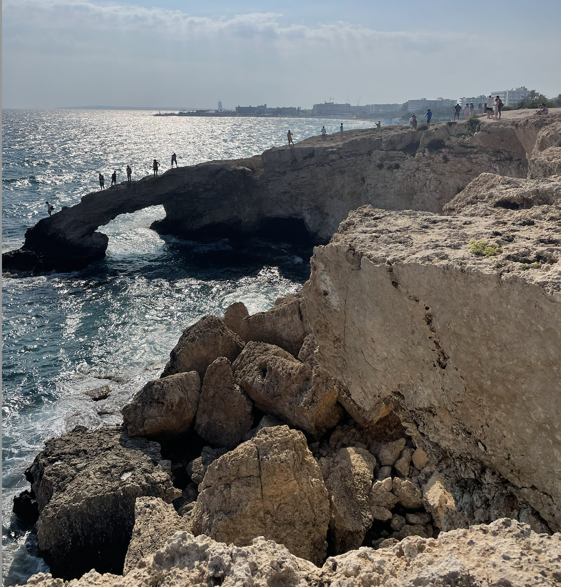
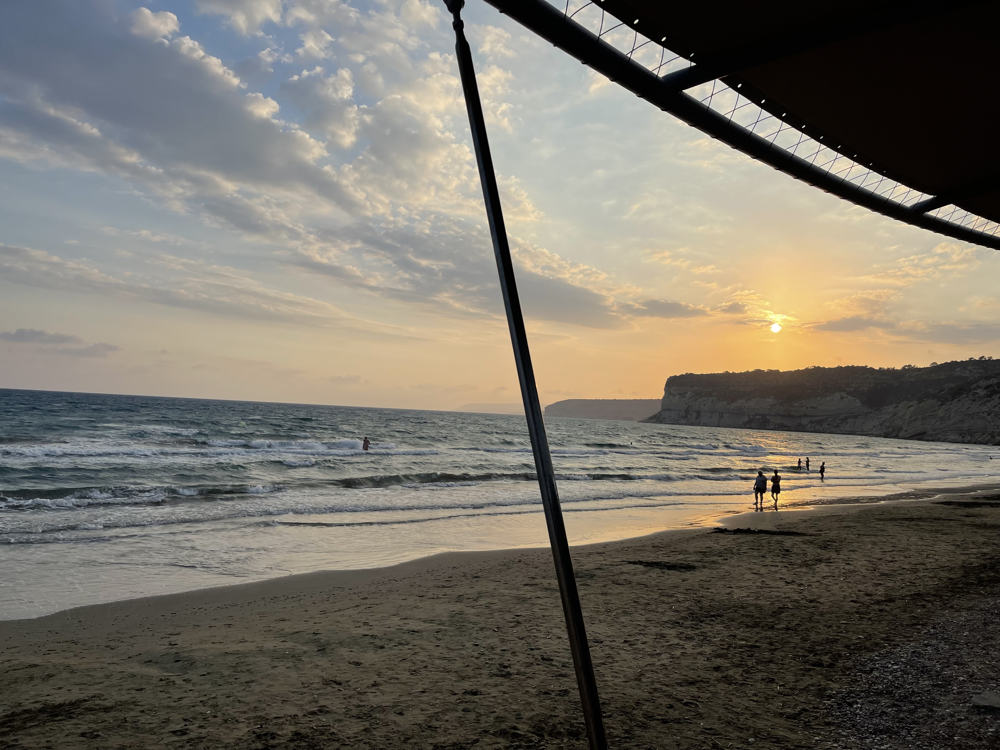
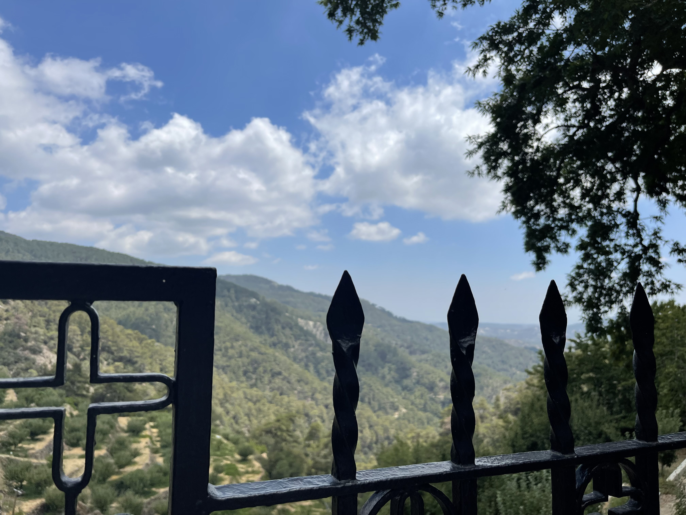
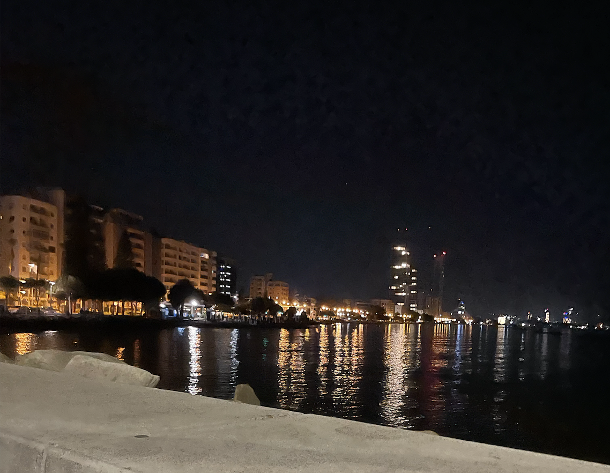

Top 5 Places to Visit in Cyprus
Alexandra Nicholaides | June 9, 2024
Cyprus is a great tourist destination for everyone no matter what type of vacation you are looking for. Cyprus has relaxing beaches, great trails on the montains for hiking, divine restaurants, and nightlife.

Cyprus is the third largest island in the Mediterannean, just after Sicily and Sardinia. It is a growing tourist destination known for beautiful beaches and great weather. The best time to visit Cyprus is July and August where the temperature has daily highs above 31°C and is sunny 13 hours a day with a zero average rainfall.
- Ayia Napa
 - Kourion Beach in Limassol
 - Aphrodite's Rock in Paphos

- Troodos Mountains
 - Marina in Limassol
